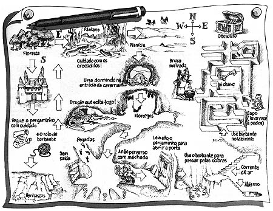
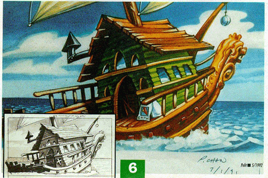
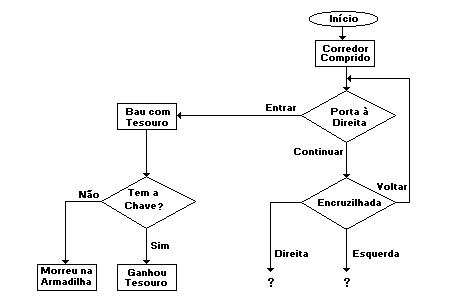
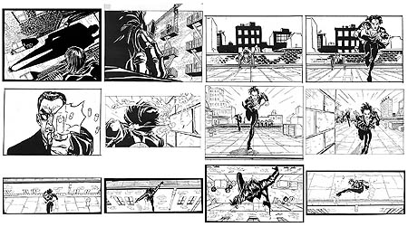
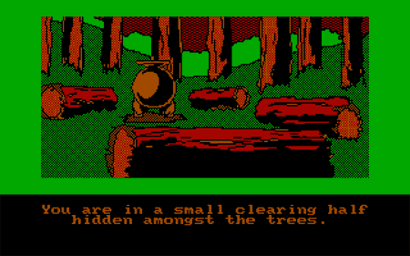
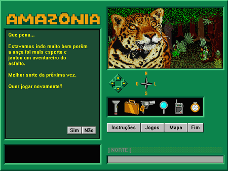
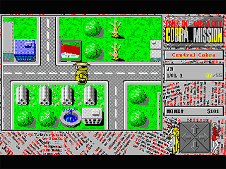
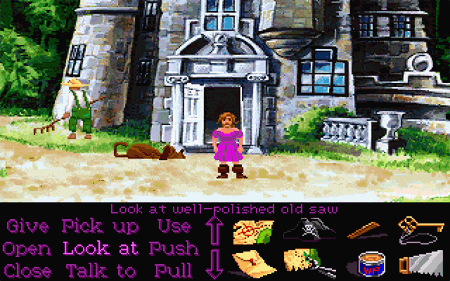
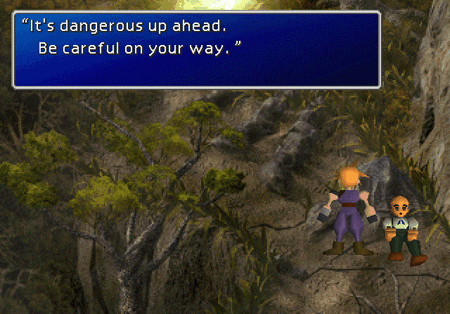

|
|
|
Como se faz um um adventure? O que é necessário saber ou aprender? Quanto de dinheiro é necessário? Quais são as etapas de desenvolvimento? Por onde começar? Veja no artigo desse mês , uma visão geral de todo o processo de criação de um adventure, desde a concepção básica até a distribuição.
É preciso muito trabalho para se fazer um bom jogo, e além de trabalho, é preciso fazê-lo do modo correto. Várias pessoas que eu conheci, também começaram a fazer jogos para computador. Algumas tiveram sucesso em criar pequenos jogos. Outras fracassaram até por questão de desorganização no trabalho. Não se pode esquecer que fazer um jogo, requer um projeto estruturado e métodos organizados numa seqüência lógica. Já vi pessoas que decidiram de repente fazer um jogo de computador, sentaram na frente do micro e começaram a programar a seqüência de abertura! Obviamente, a construção do jogo encalhou logo nos primeiros dias. Um bom jogo, não precisa ser um grande jogo. Tomamos como exemplo o velho "PAC-MAN", nascido na época ATARI, ou antes ainda. É um jogo relativamente simples de se fazer, e mesmo simples, é um ótimo jogo. De qualquer forma, a construção de um jogo não começa de repente, e muito menos pela sua animação de abertura. Como qualquer sistema de computador, um jogo deve ser planejado e replanejado. Isso é válido principalmente no caso dos adventures e na maioria de outros jogos mais complexos. Basicamente, podemos relacionar as etapas de construção de um adventure, da seguinte maneira:
Concepção do jogo
Roteiro básico
Roteiro avançado
Concepção e projeto do "engine"
Execução
Testes Alfa
Testes Beta, complementos e correções finais
Essas são as etapas básicas para a fabricação de um adventure, lembrando que dependendo do tipo de adventure, podem haver modificações no interior de cada uma dessas etapas.
Concepção do Jogo
A concepção do jogo pode ser tão difícil e trabalhosa quanto as outras etapas. Isso depende do tipo e do tamanho do adventure que está se planejando. Primeiro, o autor deve ter uma boa idéia de como deve ser o adventure, qual será o objetivo do jogador e que obstáculos o jogador terá que vencer para alcançar seu objetivo. Veja alguns exemplos:
"Vou fazer um adventure futurista em que se deve invadir uma base e roubar alguma coisa, o jogador terá que enfrentar todo o exército da base, e deverá usar vários objetos em diversos cenários para progredir em sua missão."
"Vou fazer um adventure medieval em que o jogador terá que caçar e matar um dragão. O personagem do jogo contará com a ajuda do povo de uma aldeia próxima à caverna onde geralmente fica o dragão."
"Quero um jogo que tenha muita violência, sanguinolência, palavrões e bastante pancadaria, acho que seria mais interessante se fosse do tipo 3D em primeira pessoa, mas conservando as características básicas de um adventure."
Note que, o autor também deve definir em que época ocorre o jogo, se ele quiser que isso fique claro ao jogador. O autor também pode começar colocando a forma de jogar (o "engine", visto com detalhes mais a frente), diretamente junto com a criação do objetivo. Veja os exemplos:
"O objetivo do jogador é (,,,) , mas as cenas serão vistas de cima, como nos jogos de estratégia."
"O objetivo do jogador é (...) , e o jogo será em 3D, mostrando ao jogador, tudo o que o seu personagem vê".
"O objetivo do jogador é (,,,), e todas as cenas (com exceção das animações) serão vistas de lado. Também haverá um pequeno menu na parte inferior da tela, que disponibiliza o controle do personagem ao jogador".
Como você viu nesses exemplos, antes de se começar a fazer alguma coisa, deve-se ter uma boa idéia do que se quer. É altemente aconselhável que o criador passe vários dias pensando no jogo nas horas de folga, ou na cama antes de dormir, por exemplo. Um bom adventure não nasce de uma vez. A idéia de se fazer um adventure, pode nascer de repente, mas a idéia de como ele será, deve ser bem trabalhada antes de começar a sua produção. Ele vai nascendo aos poucos, e pouco a pouco o autor vai adicionando novas idéias e tirando o que não é mais conveniente. Depois que as idéias do jogo se formaram, deve-se escrever; colocar essas idéias no papel (ou num editor de textos, claro).
Roteiro Básico
Depois que as idéias básicas se formaram, deve-se então escrever o roteiro básico do adventure. Um bom roteiro é fundamental para muitos tipos de jogos, principalmente os Adventures, RPGs e similares. Se o autor ainda não formou uma idéia muito clara do que quer fazer, não adiante prosseguir muito com o roteiro. O que ele deve fazer nesse caso, é buscar idéias de outras fontes. Se for um jogo medieval, por exemplo, seria interessante alugar algumas fitas de filmes ou desenhos medievais de fantasia, que tenha guerreiros, magos, dragões e coisas do tipo. Se for ficção científica, seria bom alugar umas fitas com filmes de ficção, ou talvez procurar alguns livros do mesmo gênero. Fontes externas como essas, sempre podem dar novas idéias. E aí então, é só começar a escrever/reescrever o roteiro básico.
Quando se trata de jogos onde o jogador viaja ou passa por muitos lugares diferentes, é necessário construir um mapa. Não precisa ficar bonito, pois ainda não é a versão final do mapa, e nem é o mapa que vai aparecer na tela do computador (se é que existe um que apareça na tela). Além disso, os primeiros mapas desenhados são só rascunhos que vão sendo rabiscados e melhorados mais tarde.

Apesar do mapa ser muito importante, o núcleo do roteiro básico da maioria dos adventures, é o "walkthrought", que nada mais é do que um "guia de ações" que descreve todos os passos que o jogador deverá seguir desde o início do jogo, para que o seu objetivo seja alcançado. Veja um exemplo:
(...) O jogador deverá então providenciar um mapa. O mapa da fazenda pode ser encontrado no Guia Quatro Patas, que está no latão de lixo ao lado da garagem da casa do Boro. O jogador deverá ir até a lata de lixo, pegar o mapa e entregar para o motorista do trator. Com o mapa na mão, o motorista levará o jogador até o outro lado do brejo. Lá do outro lado, o jogador verá um naturalista famoso tirando fotos de besouros. O jogador deverá então obter a máquina fotográfica do naturalista. Para isso, o jogador terá que arrumar um dinheirinho para comprá-la. Ele deverá então ir até a grande árvore oca que está depois da floresta de eucalíptos. Lá, vai haver um anãozinho colecionador de moedas. Para conseguir as moedas do anãozinho, o jogador terá que (...)
Junto com esse material (que no início deve ser bem simples), deve-se definir as situações que o jogador encontrará durante sua aventura. Se o jogador encontrar diversos outros personagens (amigos ou inimigos), é preciso fazer uma ficha para o jogador (PC) e uma para cada amigo/inimigo (NPC). Essas fichas deverão conter o nome do jogador ou do personagem não jogador, além de uma descrição geral, e suas características peculiares, poderes, magias, capacidades físicas, conhecimentos, o que ele faz, de onde ele veio, etc. Em alguns tipos de jogos não é necessário descrever tudo isso, mas em todos os jogos onde há NPCs, é importante ter uma fotografia ou desenho de como ele se parece. Não precisa ser a arte final, por enquanto só o rascunho está bom. Veja alguns exemplos:
|
|
|
Beto - o mecânico da turma. Ele possui uma antiga Ford Rural verde, que foi usada para chegar até o sítio do Boro. Sempre que alguém precisar de um mecânico, é só chamar o Beto.
|
|
Boro - o dono do sítio. Esse é quem mais conhece o sítio. Sempre que alguém estiver perdido ou precisa chegar à um lugar de difícil acesso, é só falar com ele.
|
|
Daniel - o técnico em informática. Na hora de mexer em algum computador, esse é o personagem mais indicado. O cara manja tudo de informática.
|
|
Luiz - o técnico em eletrônica. Montar, desmontar coisas, ou consertar aparelhos eletrônicos é com ele mesmo. Não há nada no mundo que ele já não tenha ao menos desmontado.
|
|
Paulo - o habilidoso. Com a ferramenta e o material correto, ele constrói qualquer coisa. É o único da turma que faz uma bomba atômica com um elástico e um clip de papel.
|
|
Toni - o cientista doido. Quando tudo mais falhar, chame o Toni que ele dá jeito. Como biólogo, ele pode identificar qualquer tipo de ser vivo (inclusive extraterrestres).
|
|
Em alguns tipos de adventures/RPGs, o jogador pode até criar seu personagem antes de começar o jogo, atribuindo a ele as características que lhe interessam. Por exemplo, o jogador pode querer que seu personagem tenha mais inteligência do que força, ou vice-versa; e talvez ele mesmo queira escolher o nome e outras características do personagem.
Todos esses detalhes básicos, mas importantes, deverão ser especificados no que chamamos de roteiro básico do adventure. Podem existir outros detalhes que não foram vistos aqui, mas se o autor os considerar tanto básicos quanto importantes, deve-se adicionar no roteiro básico
Antes de partir para a próxima etapa do projeto, deve-se ver e rever calma e cautelosamente todo o conteúdo do roteiro básico. É muito importante que não se tenha deixado nada no roteiro básico que seja provisório. Isso quer dizer que, as figuras, mapas e material escrito podem ser provisórios, mas não com conteúdo provisório. Isso é, o autor pode estar com um walkthrought todo rabiscado e corrigido, mas deve ter certeza de que seu conteúdo é aquele mesmo antes de partir para o roteiro avançado.
Roteiro Avançado/Documentações Técnicas
Essa é uma parte que pode ser exaustiva na maioria dos adventures, pois exige documentação e organização de todo o conteúdo do adventure, tendo como princípio, o roteiro básico. Eis o principal conteúdo do roteiro avançado, incluindo a sequência de desenvolvimento:
1-Walktrhought (do roteiro básico, passado à limpo)
2-Mapas (versão final, passada à limpo)
3-Ficha de cada cenário do jogo
4-Ficha de cada objeto contido no jogo
5-Ficha dos personagens (PCs e NPCs)
6-Listagem de diálogos
7-Listagem de eventos
8-Storyboard das animações
9-Apêndices
O Walkthrought, é o mesmo do roteiro básico, só que revisado e passado à limpo, de forma que fique tudo escrito de forma clara, devendo estar especificadas todas as ações que o jogador deverá fazer para finalizar o jogo, desde sua situação inicial.
Os mapas também deverão ser passados à limpo, e devem estar de forma bem clara, sem as rabisqueiras dos primeiros rascunhos. Dependendo do tipo de adventure, poderá também haver diversas indicações, tais como posicionamento de "câmeras", o número/código do cenário, e outros detalhes mais técnicos que não se viu no roteiro básico.
Na ficha de cada cenário, deverá conter o número/código do cenário, uma pequena lista de objetos que deverá aparecer no cenário, e o rascunho da cena propriamente dita. Olhando com cuidado os trechos do walkthrought, tais como "(...) Guia quatro patas, que está no latão de lixo ao lado da garagem da casa do Boro (...)", o autor já percebe que ao desenhar o cenário da garagem, deverá também desenhar uma lata de lixo ao lado. Por isso é necessário ter à mão, o walktrhourght totalmente finalizado quando for a hora de desenhar os cenários do adventure.
Logo após a conclusão as fichas de cenários, o autor deverá passar as fichas de cenários com os rascunhos das cenas à pessoa que vai redesenhar os cenários baseados no rascuho contido na ficha de cada cenário. O artista irá pegar a ficha de um determinado cenário, e redesenhar em uma nova folha, todo o cenário, desta vem com um acabamento muito melhor, comparado ao rascunho contido na ficha. Essa nova folha, deverá conter simplesmente o número/código do cenário, e o desenho pronto.

|
Rascunho e ilustração final de uma cena do Monkey Island 2, da LucasArts.
|
Depois que os cenários foram devidamente desenhados, deverá se começar a catalogação de todos os objetos interagíveis do jogo. Isso é, todos os objetos que o personagem do jogador possa manipular, ou ao menos reconhecer. Por exemplo: Um quadro na parece de um cenário que está lá apenas por decoração não entra na lista, pois ele não é essencial no roteiro, que nem chega à citá-lo. Mas a lata de lixo ao lado da garagem é importante, pois ela contem um outro objeto excencial ao jogo. Então ela entra na listagem de objetos. Essa relação de objetos, deverá conter um número/código para cada objeto, uma descrição básica, um desenho do objeto, sua localização, e uma descrição de como/quando o objeto poderá ser usado no jogo. Note que na ficha de cada objeto, vai o número do cenário em que ele pode estar inicialmente. E note também que na ficha de cada cenário, está uma relação de objetos contidos nele.
As fichas dos personagens deverá ser feita com todas as especificações possiveis de cada personagem. Incluindo o número/código do personagem, nome, descrição básica, desenho, descrições gerais, e uma lista com os objetos que ele deverá possuir inicialmente (pego da relação de objetos que já deverá estar pronta).
Nos tipos de adventures em que um personagem pode conversar com outro, há necessidade de se criar uma árvore de diálogos, basicamente dividida em duas partes: A primeira parte é uma simples listagem que contém somente o código da frase e a frase logo na frente. A segunda parte contém todas as possivels perguntas (só os códigos delas) e todas as possiveis respostas para tal pergunta (só os códigos das respostas). Tendo esses códigos sido extraídos da primeira parte. Essa parte da documentação pode ser exaustiva.
Em muitos tipos de engines para adventures (que será discutido com mais detalhes, abaixo), é necessário documentar todos os eventos importantes do jogo. Esses eventos são resultados de ações geralmente feitas pelo personagem do jogador. Por exemplo: "(...) entregue o mapa ao motorista do trator, que ele o levará até o outro lado do brejo (...)". Nesse caso, o evento seria documentado, por exemplo, da seguinte maneira:
Evento:026
Ação:[personagem 06] entregar o [objeto 022] ao [personagem 08]
Reação:[personagem 06] é transportado para o [cenário 15]
Note que para produzir essa parte da documentação, todas as outras partes anteriores, já deverão estar prontas e revisadas. É interessante que o autor trabalhe principalmente com códigos nessas etapas, pois isso ajudará em muito quando chegar a hora de programar o software do jogo.
Vale a pena lembrar que existem os roteiro lineares e os não lineares. No caso dos roteiros lineares, o personagem do jogador é obrigado a seguir uma certa sequência de eventos para que ele complete o jogo. Já no caso dos roteiros não lineares, o personagem do jogador tem total liberdade para fazer o que e quando quiser, de forma que ele não precisa fazer tudo numa determinada sequência.
Outra forma de documentar os eventos do jogo (mas que não substitui o exemplo acima) é através do fluxograma, que contém um mapa de possíveis ações do personagem. Exemplo:

|
Exemplo de fluxograma mostrando o walkthrought / sequência de eventos de um adventure.
|
Quando o adventure possui sequências de animações, é necessário fazer um storyboard para cada animação, da mesma forma que é feito no cinema, especificando o código da animação, as posições de câmeras, pequenas observações e as cenas quadro a quadro, que mais tarde se transformará numa animação vista pelo jogador na tela do micro. Eis um exemplo de storyboard:

Outras observação, tabelas, descrições e qualquer outro material escrito que for excencial e técnico para produção do jogo, poderá ser documentado no final do projeto, com uma seção entitulada "Apêndices", "Observações Gerais" ou algo do tipo.
Concepção e Projeto do Engine
Depois de fazer toda a documentação necessária do roteiro do jogo (isto é, muito tempo depois), é hora de reunir a EQUIPE DE DESENVOLVIMENTO. Se o autor achar que seu jogo é bastante grande, ou bastante trabalhoso, deve se lembrar de que NINGUÉM FAZ UM GRANDE JOGO SOZINHO. E se ele tiver um pouco de bom senso, perceberá que é melhor ser co-autor de alguma coisa grande, do que ser autor solitário de alguma coisa medíocre (lembrando ainda que, quando se trata de um joguinho simples, pode não ser necessário tudo isso para se obter um bom resultado, mas estou dando ênfase a adventures de médio/grande porte/complexidade). É preciso trabalho organizado em equipe. Até agora, o mais importante foi feito, mas ainda não tem nada de concreto funcionando no computador (e ainda vai demorar um pouco para ter). É necessário reunir num mesmo local e ao mesmo tempo, as pessoas que vão fazer as músicas, as pessoas que vão cuidar dos efeitos sonoros, os que vão cuidar dos gráficos, os atores que vão dublar os personagens e os programadores que vão pegar tudo isso, juntar com o roteiro e fazer um programa interativo chamado "engine".
A "engine" é a base de funcionamento do jogo. Ele define o tipo de jogo (e o tipo de jogo desejado, define a engine a ser criado). Existem muitos tipos de
engines para adventures. Vamos deixar bem claro que a engine não aparece no monitor. Ele é o programa que recebe comandos do jogador e os "aciona" no universo do jogo, agindo depois, de acordo com o resultado dessas ações. A engine também capta tudo o que o personagem do jogo deve estar vendo e coloca essas imagens no monitor do computador para que o jogador as veja. Aqui estão alguns exemplos de engine:
Adventure Caractere - Nesse tipo de engine, não existe gráficos. Um texto contendo a descrição da cena é mostrado na tela, e o jogador deve digitar o que ele quer fazer. Depois disso, um novo texto é mostrado na tela, dizendo o que aconteceu após o jogador realizar tal operação. É um tipo muito antigo de engine, e hoje em dia, não é usado quase nunca.
Ponteiro de Cenário - Esse tipo de engine, é parecido com o sistema citado acima, porém, a cada cenário que o jogador chega, é mostrada uma ilustração na tela, permitindo que o jogador tenha uma visão realmente de onde ele está ou do que está acontecendo. Eu uso esse nome para esse tipo de engine, porque a "alma" da engine é um tipo de ponteiro, ou marcador que marca em que cenário está o personagem. E ao carregar para a memória o arquivo que contém o cenário, a engine fornece uma descrição do cenário, uma imagem, uma relação de objetos contidos nesse cenário, e as vezes, o que o jogador pode fazer ou não. Ao caminhar para o norte, por exemplo, o marcador passa a apontar para o cenário que está imediatamente à norte do cenário antigo, voltando a carregar para a memória as caracteristicas do novo cenário. Alguns exemplos desse tipo de engine, são o clássico The Hobbit, e Amazônia, de Renato Degiovani.

|
Cena do clássico adventure "The Hobbit". Antigo pra xuxu! :-)
|

Tile-Based Engine - Nesse tipo de jogo, os cenários são geralmente vistos de cima, e o método que a engine usa para montar o cenário, é simplesmente pegar um pequeno pedaço de imagem que forma um pedaço de chão e ir montando o chão alinhando essas imagens lado a lado. Também é válido para paredes, objetos e outros elementos além do chão. A maioria dos elementos mostrados na tela são formados por pequenas imagens montadas lado a lado. Isso faz com que o jogo seja relativamente pequeno, uma vez que a foto do cenário todo não é armazenado em disco, e sim, só os pedacinhos básicos.

|
Cena do jogo Cobra Mission, mostrando um exemplo de Tile-Based engine.
|
Visão Isométrica - Esse engine é muito semelhante à engine anterior, porém, uma imagem do cenário todo é armazenado em disco. Isso possibilita maior criatividade do artista que produz o cenário, pois assim, o artista poderá fazer um cenário com um canto escuro, ou com apenas uma das paredes todas rabiscadas, ou com um grande buraco no chão que pegue quase toda uma sala, por exemplo.
Point-n-Click - Esse clássico tipo de engine foi bastante usado nos adventures dos anos 80 e 90. Ele mostra o personagem, a cena onde ocorre a ação, um menu com possível ações do personagem, e um inventário contendo todos os objetos que o personagem coletou durante sua a ventura. Eu o chamo assim porque o usuário nunca precisa digitar nada para jogar, ao contrário dos clássicos engines de adventures da Sierra, onde esse engine foi baseado. Nos adventures da Sierra dos anos 80, o jogador tinha que digitar em uma pequena janela, o que ele queria que seu personagem fizesse no jogo.

|
Cena do jogo Monkey Island 2, da LucasArts, exemplificando um engine Point-n-Click.
|
3D - Esse tipo de engine, na verdade pode ser muito variado na forma com que ele faz o jogo interagir com o usuário. Não existe uma única aparência de engine 3D. O que caracteriza a engina 3D é apenas o fato de o cenário (e talvez objetos e personagens) serem armazenados na forma de objetos vetoriais, e ao mostrar na tela, o computador renderiza (ordena os poligonos, monta-os em suas posições, e aplica as cores e sombras para cada um deles) todo o cenário.

|
Cena do jogo Final Fantasy VII, mostrando um exemplo de engine 3D.
|
Nessa etapa do projeto (concepção e projeto da engine), vão aparecer muitos problemas. É aí que vão surgir frases do tipo:
"Vai ficar muito "pesado", só os computadores mais rápidos vão conseguir rodar o jogo?".
"Se usarmos o canal de som principal para as músicas (WAV), teremos que usar canais de som com menor qualidade para os efeitos sonoros (MIDI), o que vai comprometer a qualidade deles".
"Não vou conseguir fazer uma seqüência de animação usando 30 quadros por segundo com essa qualidade se não posso expor de mais de 1 Megabyte para armazenar os arquivos de imagens".
"Com tudo isso, o jogo vai ocupar uns 3 CDs inteiros".
"Se você não sabe como renderizar um ambiente 3D no vídeo, tente pesquisar alguma coisa sobre isso na internet, ou procure em algum livro".
"Seria bom se o jogo não exigisse placa aceleradora 3D".
"Isso exige um programa de inteligência artificial muito complexo, vai demorar".
Nessa etapa, a maior parte da "bomba", fica para os programadores. São eles que vão desenvolver um programa que analisa as ações do jogador, aplica-as no universo do jogo, analisa o resultado, coordena tudo isso com gráficos, vozes e efeitos especiais. Muitos engines são formados por vários engines menores denominados simplesmente "rotinas". Uma rotina é parte de um programa inteiro. Pode-se então, fazer uma rotina para tocar as músicas do jogo, outras para mostrar os gráficos no vídeo, e assim por diante. O que pode dificultar um pouco, é o fato de que quase sempre, essas rotinas devem funcionar todas ao mesmo tempo. Muitas vezes, as decisões tomadas nessa etapa de construção do jogo, são revisadas e alteradas durante a execução do projeto, devido à dificuldades encontradas ou à novas soluções encontradas, mas mesmo assim, é preciso deixar tudo o mais claro possível antes de começar a se fazer as primeiras rotinas. É interessante fazer um esquema em blocos da engine, e ter uma idéia clara de como a engine funciona, antes de partir para a próxima etapa. Fazendo isso, tem-se uma idéia mais clara do que deverá ser desenvolvido pelos programadores do jogo, bem como a escolha da linguagem de programação mais adequada à construção do adventure. Como esse artigo foi idealizado para fazer uma abrangência mais generalizada, não é possível entrar em muitos detalhes técnicos nessa etapa tão importante da produção do adventure. Contudo. isso é um assunto que poderá ter seu espaço exclusivo em algum futuro artigo que publicarmos.
Execução
Agora sim, mão à obra! Todas as equipes devem obter uma cópia do roteiro mapas e todas as fichas com informações sobre o jogo, isso é muito importante. É baseado nessa documentação, que a equipe de música vai começar a criar os primeiros testes, o pessoal da animação vai começar a fazer cenas, os arte-finalistas vão começar a digitalizar o universo do jogo para seus discos rígidos, os programadores irão começar a desenvolver suas primeiras rotinas e programas, etc.
Muitas vezes, será necessário criar programas inteiros que não fazem parte do jogo, mas que vão ajudar na hora de fazê-lo. Por exemplo, alguns jogos possuem um ?editor de fases?. Esse ?editor de fases? nada mais é do que um programa que não faz parte do jogo, mas serve para fazer os cenários e lugares das fases do jogo. Esse e muitos outros tipos de programas auxiliares poderão ser criados durante a execução do projeto.
Testes Alfa
Testes, e correções são os passos seguintes, depois que a engine está pronto. Existem dois tipos básicos de teste de um programa. São os Testes Alfa e os Testes Beta. Agora serão feitos os testes Alfa, isto é, antes de fazer as primeiras distribuições do jogo, a própria equipe de desenvolvimento (todo mundo: músicos, atores, desenhistas, programadores, etc) passará um bom tempo testando e aperfeiçoando o jogo. Surgirão novas idéias de como melhorar a engine, PCs e NPCs que ficariam melhor de outro jeito, músicas que não se encaixam na situação onde foram colocadas, e outros tipos de ajustes. Para cada ajuste significativo, o jogo deve ser testado novamente do início ao fim, e por toda a equipe, até que todo mundo aprove tudo e não ocorra nenhum problema técnico.
Testes Beta, Complementos e Ajustes Finais
Depois de tudo testado, modificado e retestado, está pronta a versão Beta. Agora começa a segunda etapa de testes, onde a equipe deve procurar vários
voluntários para testar o jogo. É importante que esses voluntários não façam parte da equipe de desenvolvimento, pois a equipe já testou o jogo da sua maneira. Nesse ponto, o jogo deve ser testado de uma maneira nova, e com idéias novas. A versão Beta nada mais é, do que um programa "teoricamente acabado", distribuído à um grupo restrito de pessoas para ser testado de diversas maneiras. Nenhum tipo de documentação ou dica, deverá ser passado para os Beta Testers, somente o jogo e algumas planilhas de testes. Nessas planilhas eles deverão descrever quais os pontos positivos do jogo, bem como os pontos negativos (principalmente). Essas planilhas deverão conter também, os progressos importantes que os jogadores (agora, os Beta Testers) obtiveram no jogo, com data e hora. Deverá conter também um relatório de erros. Sempre que um erro de programa ocorrer, deverá ser anotado a mensagem de erro, a situação do personagem, e qual foi a última ação do jogador antes de ocorrer o erro.
Enquanto os Beta Testers vão trabalhando, a equipe de desenvolvimento não vai ficar parada, ainda há bastante coisa para fazer. Agora sim, é hora de fazer uma abertura para o jogo, os créditos (aquele monte de nomes que ficam subindo na tela depois que o jogo termina), fazer uma versão demo, procurar um lugar na internet ou qualquer outro meio para distribuir, se o jogo for distribuído em CDs, deve-se providenciar quem vai fazer as gravações, e outros preparativos do gênero.
Quando tudo isso acabar, provavelmente, os testes Beta já terão terminado também. Nesse caso, é hora de recolher o material da equipe de testes, fazer as últimas correções, e pronto! Está feito o jogo!
Conclusões e Considerações Finais
Percebe-se claramente que foi dado mais ênfase às primeiras etapas de produção de um adventure. Isso porque elas são realmente as mais importantes. Não entrei em muitos detalhes técnicos porque esse não é o objetivo desse artigo, que foi feito apenas para mostrar uma visão geral de como produzir um jogo adventure, tendo visto que muitas pessoas ficam meio "perdidas" no começo. Também não sou nenhum "expert" na confecção de jogos, apenas coloquei aqui as minhas opiniões e conhecimentos a respeito. Parte desse conhecimento, adquirido na própria experiência de produção do Borolândia, e outra parte adquirida com experiências anteriores.
Com base no que foi lido aqui, espero dar respostas às pessoas que possuem dúvidas básicas à respeito da produção de um jogo, principalmente adventure. Cabe ao leitor, decidir o que considerar ou desconsiderar desse artigo, assim como cabe ao leitor decidir fazer ou não um jogo, depois de ler esse conteúdo. Será que só compensa fazer um jogo se for para ganhar dinheiro com ele? Será que compensa fazê-lo apenas por curiosidade, diversão ou hobby? Isso é algo que somente o leitor poderá decidir. O custo é elevado? Depende. A maior parte do custo de produção de um adventure, quando se tem vontade de fazê-lo, está na forma de TEMPO. Tomando o Borolândia como exemplo, apesar de estar atualmente na fase de roteiro avançado, noventa por cento do que se gastou até agora para fazê-lo, foi com refrigerante, pão, mussarela, presunto e batata frita, para dar ânimo às reuniões da equipe. :-)
Quaisquer dúvidas, críticas, perguntas, sujestões ou comentários são benvindos. É só mandar e-mail para borolandia@yahoo.com, com o assunto "artigo 04". Obrigado. :-)
Luiz Carlos F. Jr, equipe de desenvolvimento do Borolândia.
|
|